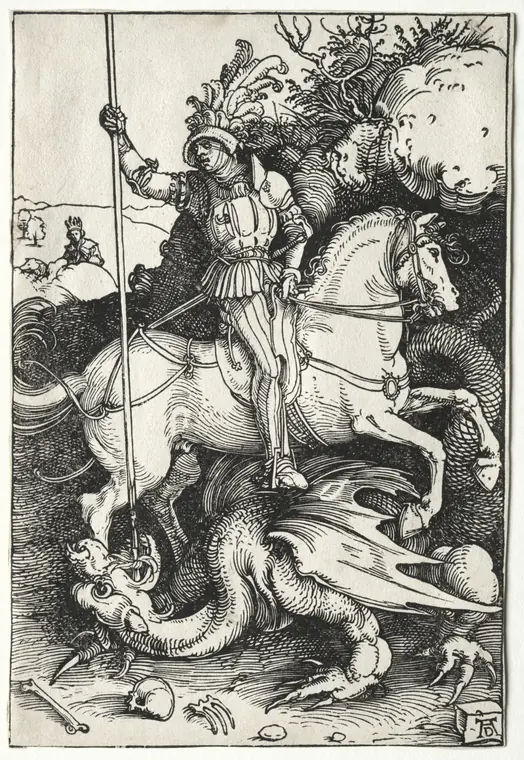

My basketball model scored 0.97 AUC. It was cheating.
When a result looks too good, suspect a leak before you suspect genius.
Painting: Joseph Mallord William Turner, The Burning of the Houses of Lords and Commons, 16 October 1834, 1835. Cleveland Museum of Art, CC0.
Early versions of my NCAA basketball predictor had an ROC-AUC of 0.9666. For a sports model, that is not impressive. It is suspicious. Nobody predicts college basketball that well, because the games are not that predictable.
The model was not predicting anything. It was reading the answer.
How the leak worked
One feature was home_fg_pct, the home team's field goal percentage. The problem was which field goal percentage. The data stored what the home team shot during the game itself. So the model learned that teams that shoot well win. That is true, and it is useless, because you do not know how a team will shoot until the game is over.
This is data leakage: the model trains on information that it will not have at the moment it must make a prediction. It is the same mistake as a wrong attention mask in a transformer, where the model can see the next word it is supposed to guess. Different field, same failure.
The fix
Every feature now stores a rolling average of the team's last 10 games going into that night. home_fg_pct = 0.47 now means that this team has averaged 47% from the field over its last 10 games. That is information you have before tip-off.
The enrich step walks through every game in date order and builds these averages only from earlier games. If either team has no history yet, the game is dropped from training. I also removed four features completely: points per game and an efficiency score for each team. Both come from the final score, which is the thing the model must predict.
The AUC fell from 0.9666 to about 0.74. That is the correct result. An honest 0.74 is worth more than a dishonest 0.97.
Checks that run before any model sees data
A leak that happened once can happen again, so the pipeline now looks for it on every run. Before training, it runs four checks:
- Leakage detection. A feature that correlates with the outcome above 0.70 is flagged as suspicious.
- Near-zero variance. A feature that barely changes carries no information.
- Class balance. The home win rate must sit between 40% and 70%. Outside that range, the data is probably wrong.
- Sample-to-feature ratio. Too few games for the number of features is a condition for overfitting, and the pipeline catches it early.
Six models, one winner
Each training run is a competition. Gradient boosting, random forest, extra trees, an SVM, a small neural network and, if it is installed, XGBoost all train on the same data. Each model sits in a scikit-learn pipeline with a StandardScaler that fits only on the training set, so no information leaks through the scaling either. Each model is scored on a held-out test set and with 5-fold cross-validation, and the one with the best ROC-AUC is registered as the new version.
Tree depth adapts to the size of the data: max_depth = log2(n_samples / (10 × n_features)), with a floor of 3. With about 2,300 training samples and 14 features, the ceiling is 4, whatever the configuration says. A small dataset cannot support a deep tree.
It keeps learning on its own
When the server runs, a background thread checks for new games every six hours. If there are 15 or more new games, it runs a full training cycle. The new model replaces the old one only if its AUC is at least 0.002 higher. Otherwise the run is logged as skipped, with the reason. This threshold stops the registry from filling up with versions that differ only by noise. Every version stays in the registry, so a bad release can be rolled back.
The data comes from ESPN's unofficial API: about 2,900 games across three seasons, with no API key. The live demo runs on a mix of synthetic and real data, so its metrics do not show real prediction performance.
The lesson
The high score was the bug. When a model looks too good, the first question is not "how did I do this?" It is "what can the model see that it should not?"
The work this is about

NCAA Basketball PredictorA self-improving pipeline. It pulls game data from ESPN, trains 6 models, and deploys the best one. It is built to stop data leakage. See it in the hall.